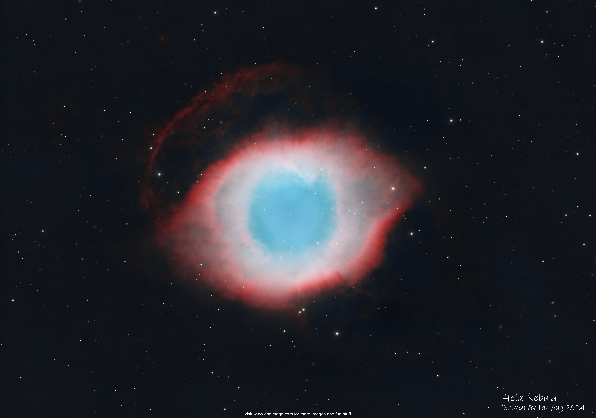
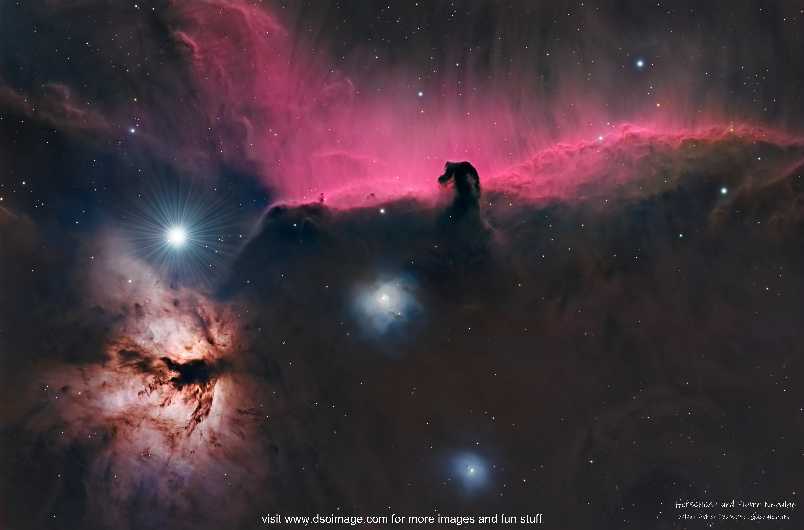
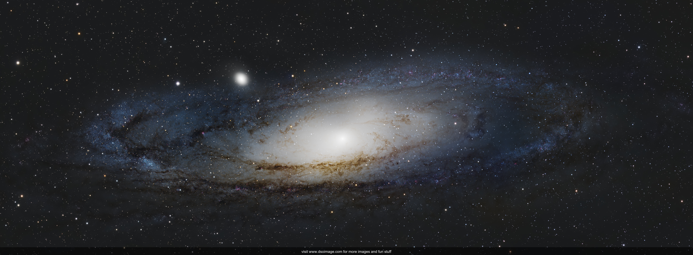

Processing
From Raw Data to the Final Image
Creating a deep-sky image is a meticulous journey of extracting faint signals from cosmic noise. My process is a blend of scientific data reduction and artistic refinement, divided into two critical stages: Pre-Processing and Post-Processing.
1. Pre-Processing: The Foundation of Quality
Before a nebula or galaxy can be revealed, we must strip away the noise introduced by the camera sensor and the environment. This is achieved through Calibration Files and Stacking:
- ⚡ Master BIAS: Removes the electronic readout noise of the sensor.
- 🌡️ Master DARK: Corrects for thermal noise and "hot pixels" caused by long exposures.
- 🌫️ Master FLAT: Compensates for optical vignetting and dust shadows in the light path.
- 🎯 Star Alignment: Registers every Light Frame to ensure perfect overlap.
- 📚 Image Integration: Stacks the data to dramatically increase the signal-to-noise ratio.
2. Post-Processing: Bringing the Universe to Life
In this stage, I work with multi-channel data. While I often use a standard LRGB setup, I also frequently image with Narrowband filters (Hα, OIII, and SII) to capture specific ionized gas emissions.
The Luminance (L) channel is typically the "soul" of the image, storing structure and sharpness. However, in Emission Nebulae, the Narrowband (Hα) channel often holds the most critical details. Because the details reside here, I take special care in processing these structural channels separately before combining them with color.
Key Processing Steps:
- ⚖️ Linear Fitting: Balancing the color channels (R, G, and B or Narrowband equivalents) to a common baseline.
- 🧹 Gradient Removal: Separating faint celestial features from the artificial sky background and light pollution.
- 🎨 Color Calibration: Ensuring stars and nebulosity reflect their true cosmic hues or intended palettes (such as the Hubble Palette).
- 🧼 Noise Reduction: Cleaning up background grain while preserving fine, hard-earned structures.
- 📈 Stretching: Carefully transitioning the data from a "dark" linear state to a visible one. The Luminance/Hα channel is optimized for contrast and detail before being merged with color.
The Toolkit
My workflow is a hybrid approach. I utilize the mathematical power of PixInsight artistic touches, color grading, and selective sharpening.
Helix Nebula: Single Raw Frame vs. Final

Signal To Noise Ratio (SNR):
The Science of Deep-Sky Imaging
One of the most common questions in astrophotography is: "Why do we need to collect so many hours of data? Why can't we just take one photo and brighten it?"
The answer lies in the Signal-to-Noise Ratio (SNR). In our hobby, the "Signal" is the light from the distant galaxy or nebula, while the "Noise" is everything else—electronic interference, thermal heat, and most importantly, the inherent randomness of light itself.
The Poisson Reality
Light arrival is not a constant stream; it is a stochastic (random) process that follows a Poisson Distribution. This means that "Shot Noise" is actually a property of the light itself. The only way to overcome this uncertainty is to collect more photons.
Why We Must Collect Many Frames
To achieve a high SNR and produce a clean, "smooth" image that can withstand the heavy stretching we do in PixInsight, we must collect as many frames as possible.
- ❌ Simple Addition vs. Integration: If you simply take a single frame and add it to itself or "brighten" it, you are scaling the noise along with the signal. The statistical uncertainty of that specific moment is "frozen" in the frame.
- ✅ The Power of Averaging: When we integrate (stack) many independent frames, we are taking multiple independent samples of that Poisson process. Because the signal is constant and the noise is random, the noise doesn't add up linearly. It adds as the square root of the sum of squares. When you divide that combined noise by the number of frames , the noise effectively decreases by a factor of 1/ sqrt(n). over time while the signal builds up.
The Square Root Rule
There is a mathematical "tax" on our time: to double the clarity (SNR) of your image, you must quadruple your total exposure time.
The Bottom Line: To reveal the faint outer arms of a galaxy like M106 or the delicate tendrils of a nebula, there is no substitute for total integration time. The more frames we collect, the more we "narrow the distribution" and find the true, beautiful signal hidden in the darkness.
HorseHead_Flame_Nebula : Single Ha Frame vs. Final

Andromeda Galaxy : Stacked and Integrated Luminance Frame vs. Final
